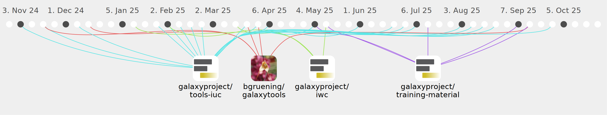

RZ9082

Commits all-time: 217
Commits last year: 125

(88)
- 51a1d5c
- f9a673c
- 144e3fa
- 1775044
- d5e71cb
- 1019386
- b469763
- 7c507cf
- b796bad
- e5d098a
- 599c4dd
- 6fed95e
- 0de0bde
- 0778978
- 59ddc65
- 71caa22
- d4b4ad1
- 5f944fb
- e58dab5
- dd6a3d1
- 9524d58
- 4f31c74
- 4ada0d9
- 8b86872
- 07fa81c
- 1f9c369
- b076efb
- 917d5eb
- ea91506
- 00abd01
- 1196a9b
- 26a21d0
- 80ffebc
- 2cebc8b
- b86e5fe
- f6f4d30
- 9c6143b
- 0779218
- b4aae05
- 2ae704c
- 28577a0
- a2f110f
- 45187e6
- cef1f5b
- 4474ff7
- 8e040b2
- 9634a6f
- b01a87d
- 8b54900
- f0fec83
- f3a8931
- c9dcda7
- 32d9405
- 2e94b9d
- 3b396ce
- 9ff698b
- eafc5af
- d0801ac
- 60d078a
- 8b07bcf
- 8a96308
- 4e977cc
- 381ac01
- d25d3a1
- b12ba92
- 139eee2
- 0d35d8c
- 67880c0
- ac73ed1
- eb49a01
- 3253434
- 26cbf16
- de0cba5
- 2f1e7ec
- 4761500
- 126c78c
- f4654a8
- 9c39f88
- bb117e3
- 0bb17c8
- 6e3bc45
- 73cbd3b
- 12315a0
- aac932c
- 37f5c59
- cf0dddd
- b5d9a04
- 9b1acc2
(16)
(12)
(4)
(4)
(1)